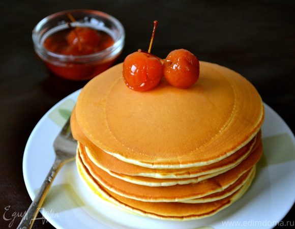

Панкейки на кефире

Ингредиенты
- Кефир - 2 стакана
- Мука - 2 стакана
- Яйцо- 2 штуки
- Ванильный сахар Dr. Bakers - 1 шт
- Сода пищевая для выпечки Dr. Bakers - 1 чайная ложка
- Сахар - 3 столовых ложки
- Соль - 1 чайная ложка
- Масло растительное - 2 столовых ложки
Способ приготовления
Расчет порций: 2 порции панкейков на завтрак.
- Взбить яйца с сахаром до образования пены .
- Добавить к яйцам теплый кефир и подсолнечное масло.
- Просеиваем в миску муку и добавляем в нее соль и ванильный сахар.
- Жидкую смесь выливаем в сухую и хорошо размешиваем.
- Добавляем соду и перемешиваем.
- Даем тесту постоять минут 5 и приступаем к выпечке.
Другие рецепты панкейков

Лучше всего панкейки подавать со сметаной и ягодным джемом.